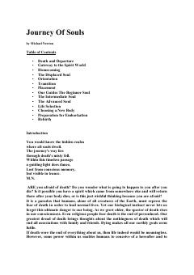

JOInson ruhining o'limdan keyingi sarguzashtlari va ruhiy olam haqidagi ta'sirli tadqiqot.
Ushbu kitob inson ruhining o'limdan keyingi hayoti, ruhiy olam va reinkarnatsiya sirlarini gipnoterapiya amaliyotlari orqali ochib beradi. Muallif o'zining mijozlari bilan o'tkazgan seanslari asosida ruhlar dunyosi va ularning Yerga qaytishi haqida batafsil ma'lumot beradi.